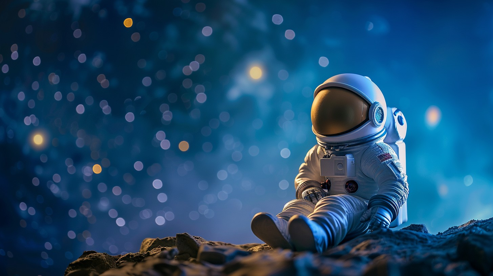
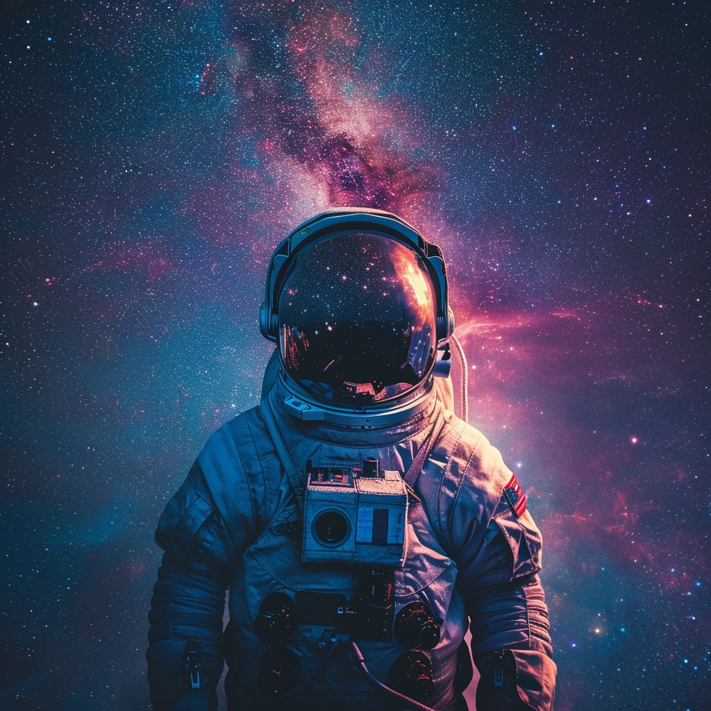
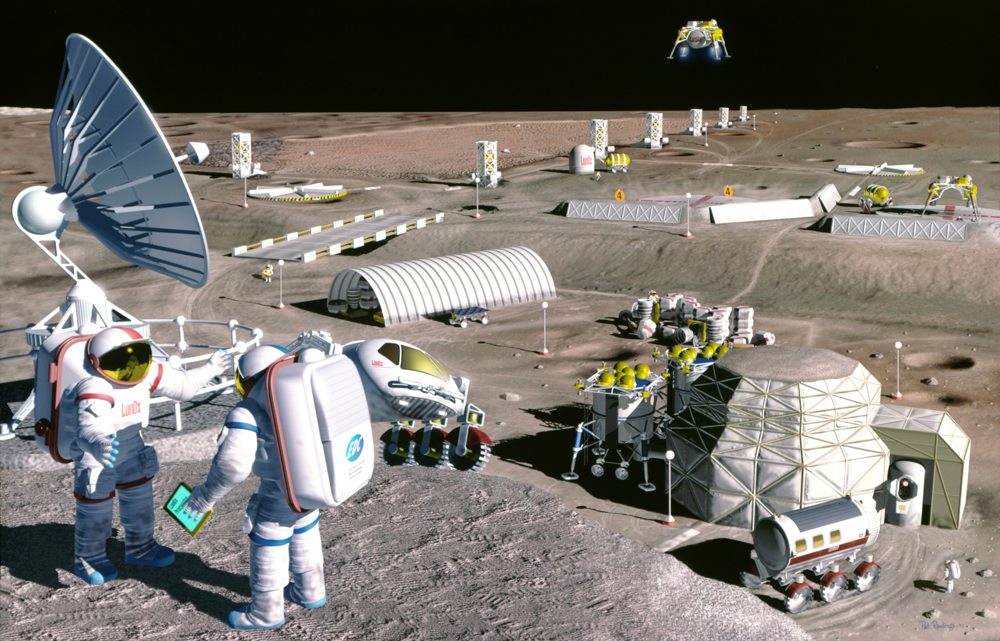
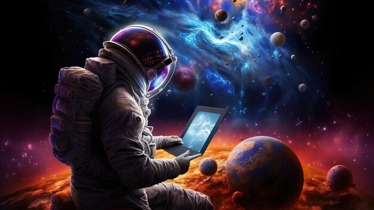

Living as an astronaut in the Milky Way would be a fascinating yet extremely challenging experience. Here's an imaginative look at what such a life could entail :
Daily Life and Routine

Spacecraft or Space Station:
-
Astronauts would reside in a sophisticated spacecraft or a space station, equipped with all necessary life-support systems, including oxygen, water recycling, food supplies, and waste management.
-
Artificial gravity might be generated through rotational sections to mimic Earth's gravity, reducing the negative effects of prolonged weightlessness.
Challenges :
Isolation and Mental Health:
- Prolonged isolation from Earth and loved ones could lead to significant mental health challenges. Regular virtual communication and psychological support would be crucial.
- A small crew living in close quarters could lead to interpersonal conflicts, requiring strong team dynamics and conflict resolution skills.

Astronaut's life
Life on the International Space Station (ISS)
Microgravity: Living in microgravity affects everything from daily tasks to bodily functions. Astronauts float instead of walk, which requires learning new ways to move and work.
Daily Routine: Astronauts follow a strict schedule, including work, exercise, and rest. They perform scientific research, maintain the station, and communicate with mission control.
Exercise: To counteract muscle and bone loss due to microgravity, astronauts exercise for about two hours each day using specialized equipment like treadmills and resistance machines.
Meals: Food is pre-packaged and often dehydrated. It must be rehydrated and heated before eating. Special attention is given to nutrition to ensure astronauts stay healthy.
Hygiene: Without running water, astronauts use rinseless wipes, no-rinse shampoo, and waterless toothpaste. They also have specially designed toilets that use airflow to manage waste.
Sleeping:Astronauts sleep in small, individual quarters with sleeping bags strapped to the wall to prevent floating around.


Future Prospects
- Colonization: Long-term goals include establishing colonies on other planets or moons, requiring advances in technology and sustainable living solutions.

2. Interstellar Travel: Future missions may involve exploring exoplanets and distant stars, pushing the boundaries of human exploration.

Living as an astronaut in the Milky
Way is a complex and demanding experience,
balancing scientific curiosity with the practicalities of survival in a hostile environment.
THE END.